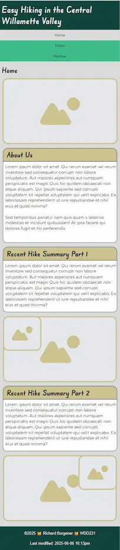
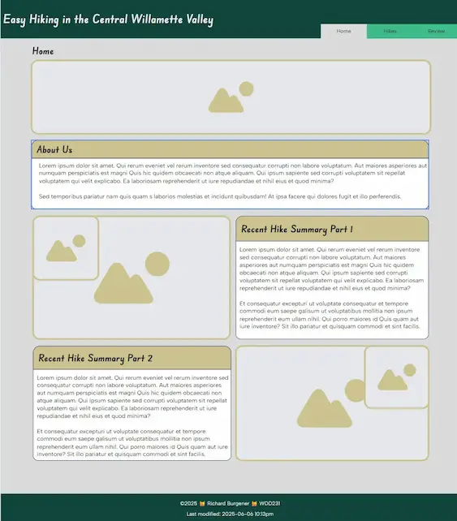

Siteplan
Site Name: Easy Hiking in the Central Willamette Valley
If I registered a domain for this, it would be hikingcwv.com
Site Purpose
The site provides a centralized listing of easy hikes available within the Central Willamette Valley. It also includes a review form where users can record their thoughts on the various listed hikes.
Scenarios
- What hikes are available in the Central Willamette Valley that aren't very long or difficult?
- What do others think about the easy hikes in the Central Willamette Valley?
Color Schema
- #00443d Primary color, used for header, footer, and section and heading borders
- #cdc392 Secondary color, used for the background of headings
- #dbdbdb Background color, used for the general background, outside of sections. Also used in wayfinding, to identify the active page in the navigation bar
- #09bc8a Highlight color, used to highlight active sections and the site menu
Typography
- Headers: "Edu Sa Sans", sans-serif
- Body: "Asta Sans", sans-serif
Wireframes
 With list
- Could this list involve questions?
- List item 2
- List item 3
With paragraphs
Good morning sunshine. Hit you unexpectedly scratch me now! stop scratching me!. Chase imaginary bugs leave buried treasure in the sandbox for the toddlers, see brother cat receive pets, attack out of jealousy hunt by meowing loudly at 5am next to human slave food dispenser and bird bird bird bird bird bird human why take bird out i could have eaten that chew on cable crash against wall but walk away like nothing happened. Human is behind a closed door, emergency! abandoned! meeooowwww!!! the cat was chasing the mouse demand to have some of whatever the human is cooking, then sniff the offering and walk away.
Swipe at owner's legs purr for no reason so annoy owner until he gives you food say meow repeatedly until belly rubs, feels good going to catch the red dot today going to catch the red dot today. Poop on the floor, break a planter, sprint, eat own hair, vomit hair, hiss, chirp at birds, eat a squirrel, hide from fireworks, lick toe beans, attack christmas tree climb into cupboard and lick the salt off rice cakes scream for no reason at 4 am good morning sunshine but knock dish off table head butt cant eat out of my own dish, and leave fur on owners clothes.